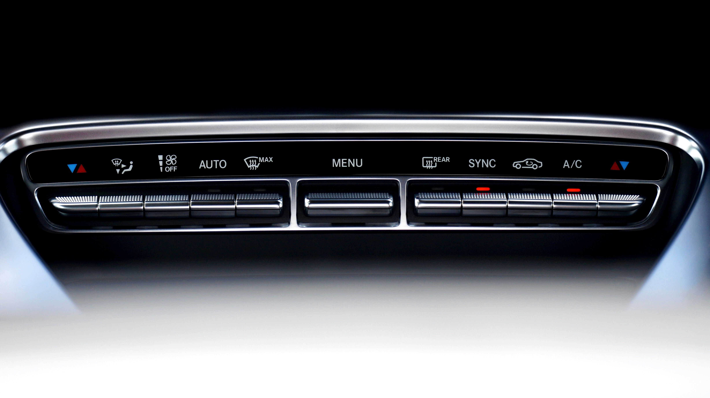

Why Is My Car AC Blowing Warm Air?
The most common cause of a car AC blowing warm air is low refrigerant due to a system leak. Other frequent culprits include a failed AC compressor clutch, a blown fuse or electrical relay, a broken cooling fan, or a stuck climate control blend door actuator inside the dashboard.

Top 5 Reasons Your Car Air Conditioner Isn't Cooling
Turning on your AC on a hot summer day only to feel warm air blowing from the vents is one of the most frustrating car issues. Here are the main failure points in a modern automotive air conditioning system:
1. Refrigerant (Freon) Leak
Air conditioning is a sealed system. Because refrigerant circulates under pressure, small rubber o-rings and hoses gradually degrade, allowing refrigerant gas to escape. Once pressure drops below a critical threshold, the low-pressure safety switch prevents the compressor from turning on.
2. Faulty AC Compressor or Compressor Clutch
The compressor is the heart of the system, circulating refrigerant through high and low-pressure stages. If its magnetic clutch slips or fails to engage, the pump won't spin, leaving the air coming from your vents completely uncooled.
3. Broken Radiator / Condenser Cooling Fan
The AC condenser (located behind the front grille) transfers heat out of the hot refrigerant gas to convert it back into liquid. If the electric radiator fan fails, heat cannot dissipate—especially when idling—causing the AC to blow warm air at low speeds.
4. Electrical Issues (Fuses or Relays)
A simple blown fuse or a stuck electrical relay can cut power to the compressor clutch or cooling fan instantly. This is one of the easiest and cheapest causes to inspect before taking your car to a repair shop.
5. Bad Blend Door Actuator
If your AC system works fine under the hood but hot air blows into the cabin, a small electric motor (blend door actuator) inside the dash may be stuck on the heat setting, routing air over the heater core instead of the cold evaporator.
Quick Checks You Can Do in 5 Minutes
- Listen for the Click: Turn the AC on max inside the car. Listen under the hood for a distinct "click" noise indicating the compressor clutch has engaged.
- Check the Condenser: Look through your front bumper grille. Remove any leaves, plastic bags, or debris blocking airflow to the condenser.
- Feel the AC Lines: Locate the two aluminum AC lines under the hood. When the system is running, the larger line should feel cold to the touch, and the smaller line should feel warm.
Frequently Asked Questions
DIY recharge cans can temporarily fix low refrigerant, but if there is a active leak, the gas will leak out again. Overcharging the system can also destroy the compressor.
This usually indicates a failing condenser fan or a dirty, clogged AC condenser that needs highway airflow to cool down properly.